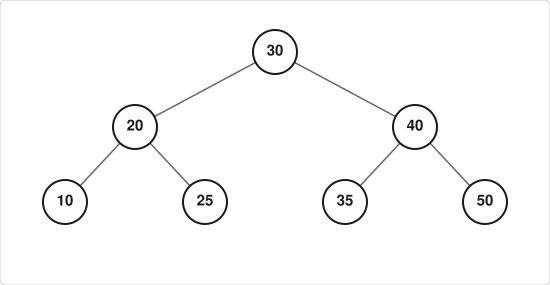

Exercícios sobre Árvores AVL¶
1. Qual é o requisito fundamental para que uma árvore binária de busca seja considerada uma árvore AVL? Explique também como é calculado o fator de balanceamento de um nó, considerando a definição: FB = Altura(SAD) - Altura(SAE).
2. Para cada uma das árvores binárias de busca abaixo (representadas em notação parentética), calcule o fator de balanceamento de todos os nós e justifique quais são AVL e quais não são:
A(5, 3(1, 4), 8(6, 9))B(10, 5(2, 7(6, 8)), 15(12, 18(16, 20)))C(4, 2(1, 3), 6(5, 7(8, 9)))
3. Seja uma árvore AVL inicialmente vazia. Mostre seu estado final após a inserção, nessa ordem, dos elementos: 2, 1, 3, 4, 5, 7. Indique em qual momento ocorrem rotações, qual o tipo (LL, RR, LR, RL) e, ao final, apresente a saída da travessia em pós-ordem.
4. Seja uma árvore AVL inicialmente vazia. Execute as seguintes operações na ordem indicada:
- Inserir:
4, 1, 0, 5, 3, 7, 2, 9 - Remover:
5e depois3 - Inserir:
10, 21, -5
Mostre a estrutura da árvore após cada operação que causar desbalanceamento, descreva a rotação aplicada e, ao término de todas as operações, apresente a sequência de nós em pós-ordem.
5. Considere a árvore AVL abaixo (desenhe-a antes de responder):

a) Calcule o fator de balanceamento de cada nó.
b) Remova o nó com valor 20 e mostre as rotações necessárias para reestabelecer a propriedade AVL.
c) Apresente a árvore resultante e sua travessia em pós-ordem.
6. Dada a sequência de inserção: 12, 6, 18, 3, 9, 15, 21, 1, 4, 8, 10.
Construa a árvore AVL passo a passo, indicando explicitamente o tipo de rotação aplicada sempre que o fator de balanceamento sair de {-1, 0, 1}. Ao final, liste os nós visitados em pós-ordem.
7. Classifique como Verdadeiro (V) ou Falso (F) e justifique tecnicamente:
- ( ) Toda árvore AVL é uma árvore binária de busca perfeitamente balanceada (altura mínima absoluta).
- ( ) A altura máxima de uma AVL com
nnós é limitada por≈ 1.44·log₂(n+2). - ( ) Se o fator de balanceamento de um nó for
2ou-2, a árvore deixa de ser AVL até que uma rotação seja aplicada. - ( ) A remoção de um nó em uma AVL pode exigir mais de uma rotação para reequilibrar a estrutura.
8. Uma árvore AVL contém os nós {8, 4, 12, 2, 6, 10, 14}.
a) Desenhe a árvore e calcule o fator de balanceamento de cada nó.
b) Insira os valores 1 e 15 (nessa ordem), mostrando as rotações necessárias.
c) Após as inserções, apresente a árvore final e a sequência em pós-ordem.
9. (Desafio) Seja uma AVL vazia. Insira a sequência: 50, 30, 70, 20, 40, 60, 80, 10, 25, 35, 45. Em seguida, remova 30 e 70.
- Mostre apenas os estados da árvore antes e depois de cada rotação.
- Calcule o fator de balanceamento de todos os nós na árvore final.
- Forneça a saída em pós-ordem da árvore resultante.
10. Explique, com suas palavras, por que a operação de remoção em uma árvore AVL pode exigir o "propagação do desbalanceamento" até a raiz, enquanto a inserção normalmente exige no máximo duas rotações em um único caminho. Ilustre com um exemplo mínimo de 4 nós.
💡 Dicas para resolução¶
- Use a definição solicitada:
FB = Altura(SAD) - Altura(SAE). Valores válidos em uma AVL:-1, 0, 1. - Rotações:
LL→ rotação simples à direita;RR→ rotação simples à esquerda;LR→ rotação dupla (esquerda-direita);RL→ rotação dupla (direita-esquerda). - Pós-ordem: visite a subárvore esquerda, depois a direita, e por fim a raiz.
- Desenhe passo a passo. A maioria dos erros vem de pular a atualização de alturas após rotações ou remoções.